index
1. 소장품이란?
2. 소장품, 관리키트 수급처
3. 소장품 관리 전략
-
1. 소장품이란?
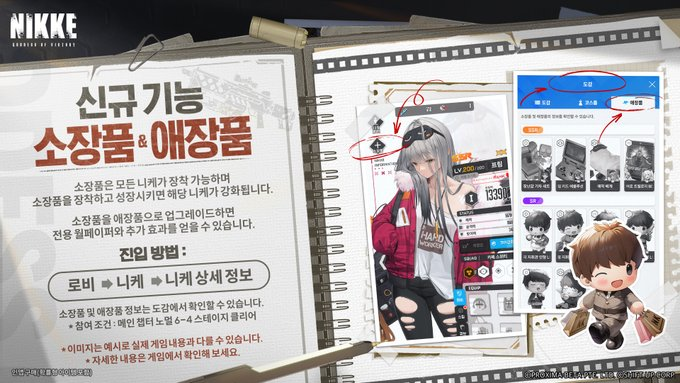
24. 05. 29 업데이트 예고
-
니케 주요 성장 요소 중 하나인 소장품입니다.
6 종류로 분류되어 있으며 등급은 총 3개입니다.
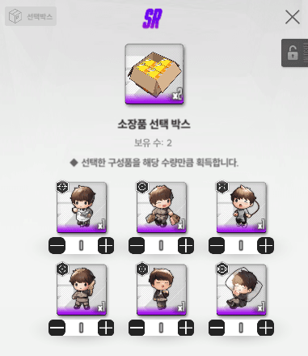
-
6가지 종류의 SR 등급 소장품 선택 상자
현재 소장품 종류로는 6가지 (SR, MG, RL, AR, SMG, SR)이 있으며 소장품을 부여하려는 니케의 무기 종류와 일치하는 소장품만 부여 가능합니다.
여기서 많은 분들이 쉽게 지나치시는 요소가 있는데
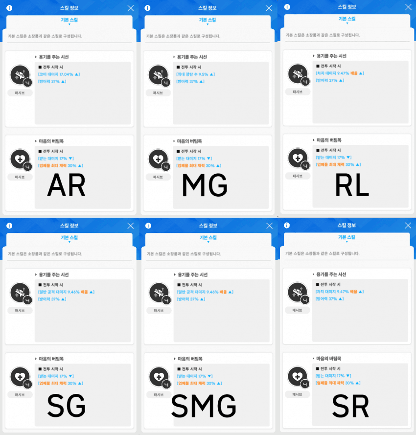
-
상기 사진을 보시면 차이점이 보이시나요?
하단 패시브 항목은 모두 같은 효과와 같은 계수를 가지고 있지만 상단 항목은 무기 별로 다른 항목을 가지고 있습니다.
만약 성능이 완벽하게 동일한 두 니케가 있고 각각 SMG와 MG를 사용한다면 SMG를 사용하는 니케가 소장품 강화 시 더 높은 효율을 보이겠죠?
하지만 라피 레드후드와 같은 예외는 항상 존재하니 소장품 우선도는 1티어 니케에 주는게 맞습니다.
이런 차이가 있구나 정도로 알고 가시면 좋습니다.
다음으로 소장품 등급입니다.
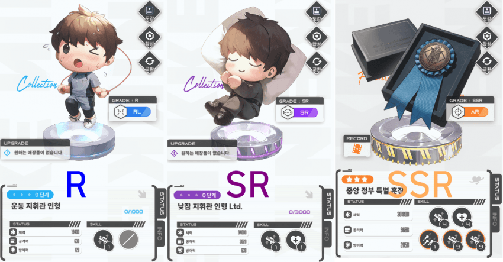
-
왼쪽부터 R, SR 그리고 SSR 등급입니다.
SSR은 애정 소장품을 받은 니케들을 얘기합니다.
R과 SR 등급은 15단계 까지 강화할 수 있고 SSR 등급인 애정 소장품은 3단계까지 강화 가능합니다.
각 소장품 별로 15단계 OR 3단계 까지 총 요구량입니다.
R 15,000
SR 45,000
애장품(SSR) 160 (2-50 / 3-110)
마지막으로 소장품 관리 키트입니다.
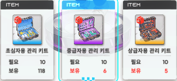
-
| 초심자용 관리 키트 | 중급자용 관리 키트 | 상급자용 관리 키트 | |
| 사용 시 획득 경험치 | 200 | 500 | 1,000 |
2. 소장품, 관리키트 수급처
수급처는 크게 4가지로 분류할 수 있습니다.
주기적으로 열리는 솔로 레이드, 파견, 패키지 구매 그리고 고철 상점이 있습니다.
우선 솔로 레이드 먼저 보겠습니다.
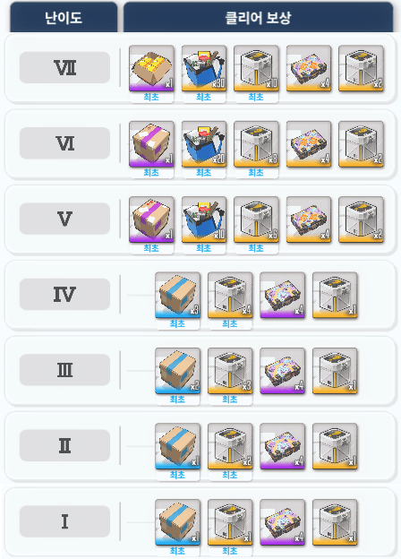
-
솔로 레이드 7단계까지의 보상입니다.
이렇게 보시면 이게 뭐지? 하실 수 있으니 중요한 것들 먼저 보겠습니다.
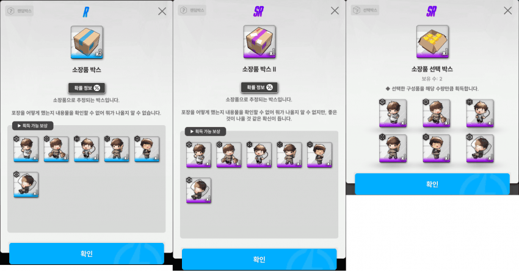
-
솔로 레이드를 통해 얻을 수 있는 소장품 수급 박스들입니다.
7단계까지 클리어 한 것으로 가정 하면 R 등급 랜덤박스는 7개, SR 등급 랜덤박스는 2개 그리고 선택 상자 1개 이렇게 수급 가능합니다.
소장품 성장을 위한 관리 키트 수급도 봐야겠죠?
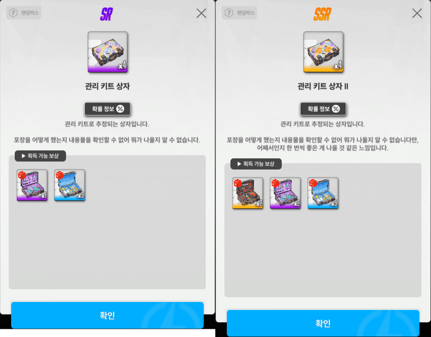
-
왼쪽부터 7단까지 클리어 시 관리 키트는 16개 그리고 관리 키트 II는 12개 수급 가능합니다.
두 상자의 개체 별 확률은 다음과 같습니다.
| 관리 키트 상자 | 관리 키트 상자 II | |
| 초심자용 관리 키트 | 80% | 70% |
| 중급자용 관리 키트 | 20% | 20% |
| 상급자용 관리 키트 | - | 10% |
다음으로 저희가 매일 보내는 파견에서 수급하는 소장품부터 보겠습니다.
우선! 파견 부분을 고려하시기 전에 택틱 아카데미 전 구간 수료하시는 걸 권장 드립니다.
마일리지 박스를 1회 열기 위한 필요 재화량은 200이며 특수파견에서 확률을 통해 얻을 수 있는데요.
| 마일리지 수급량 | 파견 등장 확률 |
| 20 | 3% |
| 30 | 7% |
| 40 | 7% |
| 60 | 3% |
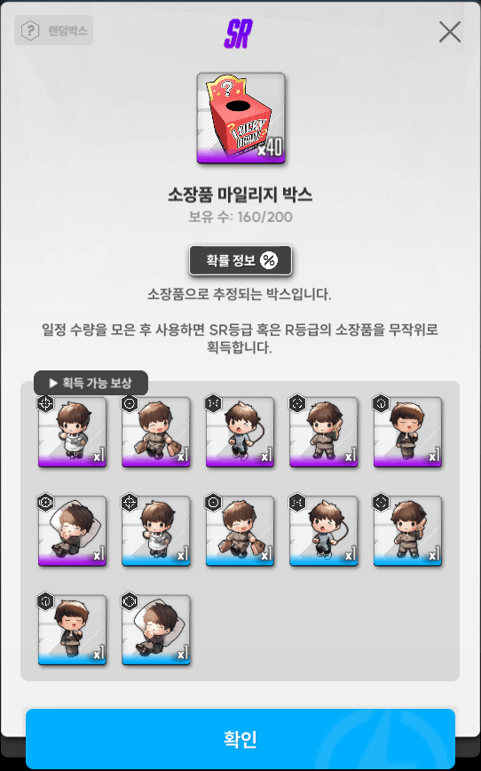
-
200개의 마일리지 획득 후 상자 개봉 시 SR 등급 획득 확률은 20% (개체 별 3.3%)이고 R등급은 80%(개체 별 13.3%) 의 확률을 가집니다.
파견으로 획득 가능한 관리 키트도 보겠습니다.
특수파견을 통해 획득 하실 수 있으며 종류로는 상기한 관리 키트와 관리 키트 II 그리고 키트 상자 개봉 시 나오는 3종(초급자, 중급자, 상급자 관리 키트)을 확률 별로 파견할 수 있습니다.
| 특수 파견 품목 | 수급량 / 파견 시간(분) | 파견 등장 확률 |
| 초심자용 관리 키트 | 2 / 60 | 15% |
| 초심자용 관리 키트 | 3 / 90 | 15% |
| 중급자용 관리 키트 | 2 / 120 | 6% |
| 중급자용 관리 키트 | 3 / 150 | 3% |
| 상급자용 관리 키트 | 1 / 120 | 4% |
| 상급자용 관리 키트 | 2 / 150 | 2% |
| 관리 키트 상자 | 1 / 90 | 15% |
| 관리 키트 상자 | 2 / 120 | 8% |
| 관리 키트 상자 II | 1 / 120 | 8% |
| 관리 키트 상자 II | 2 / 150 | 4% |
그럼 여기서 어느 정도 과금을 하시는 분들은 의문점이 드실겁니다.
"그럼 파견 리롤은 언제 해야하는거임?"
우선 상급자용 관리 키트 2개, 관리 키트 상자 II 2개 그리고 관리 키트 상자 2개 중에 1개라도 파견 목록에 있다면 절대 리롤 하지 마세요.
그리고 4성 이상이면 파견은 웬만하면 보내는게 좋습니다만 나는 과금해도 상관없고 빨리 성장하고 싶다! 하시는 분들은 리롤 해서 찾아가셔도 됩니다.
권장 드리는 부분은 아니지만 과금 안하시는 분들도 인지 정도만 하고 계시면 좋습니다.
다음, 패키지 부분을 볼까요.
이 부분이 가장 간단한데 우선 빵삥이 정리해둔 공략을 보겠습니다.
https://gall.dcinside.com/mgallery/board/view/?id=gov&no=3637399
-
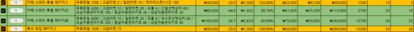
26. 02. 28 기준 과금 효율
-
과금 효율표의 엑셀을 보면 관리 키트나 소장품이 포함된 패키지들이 효율이 그렇게 좋은 편이 아닙니다.
따라서 주기적인 구매는 비추천하나 내가 당일계를 사왔고 방주 랭킹 다 먹어야 된다! 라면 한번 쯤은 고려해보실만 합니다.
마지막으로 고철 상점입니다.
주기적으로 열리는 협동 전투에서 랭킹 보상으로 획득 가능한 고철 뼈다귀로 관리 키트 상자 II를 구매할 수 있습니다.
주기 별로 개당 600개에 5개 총 3,000 뼈다귀로 구매 가능합니다.
다만, 협동전투 IN 10%를 주기적으로 하지 못하는 상황이라면 뼈다귀 분배에 있어 고려해보셔야 합니다.
서버는 한섭
3. 소장품 관리 전략
소장품 관리 전략은 정론이 있습니다.
반드시 R 등급 소장품 부여 후
15단계를 달성하시고
SR 등급으로 교체 후
SR 15단계를 달성하세요.
우선 관리 전략에 대해 설명하기 위한 구간 별 확률을 보겠습니다.
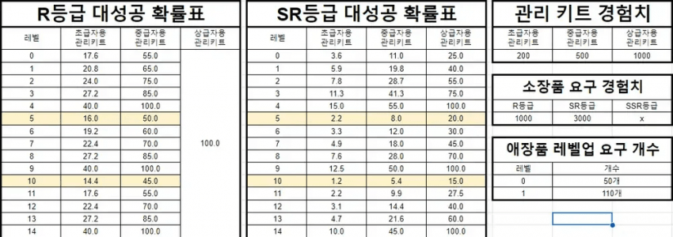
출처: 챈펌
-
R 등급에 뭘 쓰고 SR 등급이 어쩌구는 너무 지루하고 현학적이니 간단하게 설명 드리겠습니다.
우선 SR 등급 소장품 바로 사용은 정말 급한거 아니면 하지 마세요.
R 등급은 초심자용 키트만 무지성 사용하세요.
R 15등급 달성 후 SR 등급으로 교체 하실 때는 같은 소장품 계열만 가능합니다. Ex) SG to SG, SR to SR
SR 교체 시 SR 5단계가 되며 이때부터 15단계를 목표로 하는 니케의 경우 6단계까지 초심자 키트와 중급자 키트 적절히 배분하여 6단계 만들어주세요.
최소 6단계(11단계) 부터 상급자용 관리 키트 사용을 권장드립니다.
그리고 중요한 부분이 있습니다.
"R15 VS. SR5 누가 더 좋은데?"
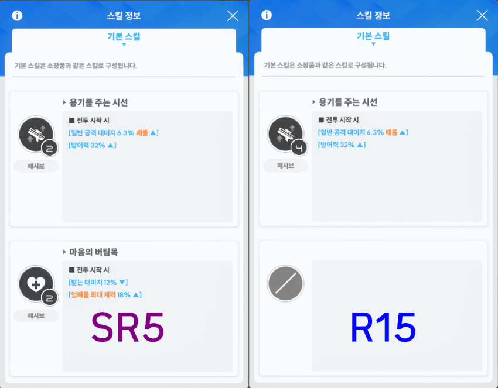
-
왼쪽은 SR5 오른쪽은 R15 입니다.
SG 니케로 비교했으며 보시다시피 딜적인 차이는 없습니다.
다만 SR5로 교체 시 하단에 새로운 패시브가 생기며 투력에 영향이 있습니다.
미비한 부분이라 언젠간 키우겠지 혹은 SR 등급 소장품이 여유 있으신 분들께 추천 드립니다.
-
마지막으로 3줄 요약 하겠습니다.
1. 파견 솔레 협전 열심히 해서 파밍해라
2. 파란거 먼저 올리고 보라색 줘라
3. 소장품 누구줄 지 모르겠으면 니갤에 물어봐라
읽어주셔서 감사합니다
질문 사항 있으시면 댓글 달아주시고 확인 하고 답변 드리겠습니다.